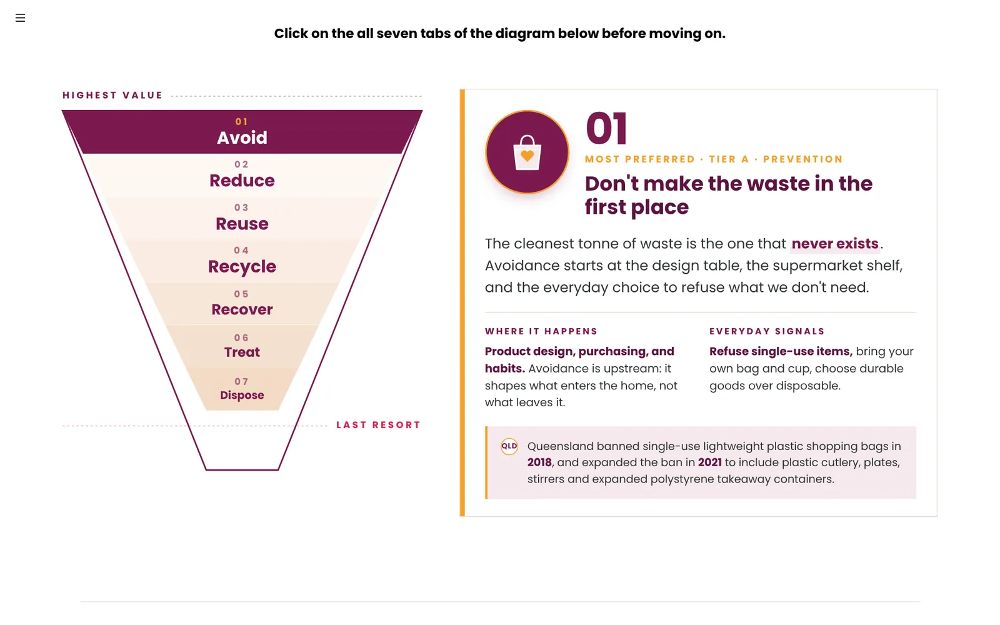
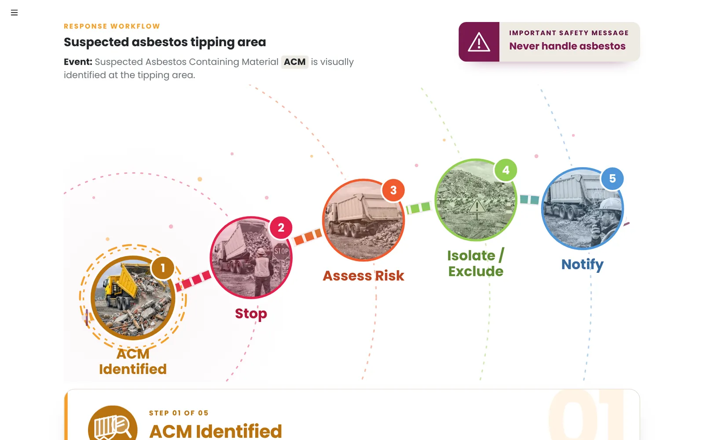
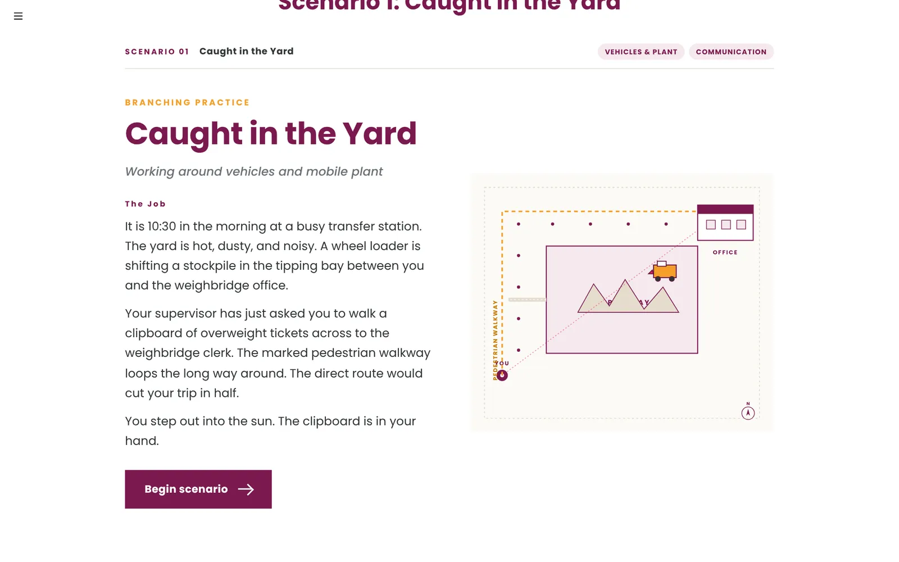

Training series for the waste and recycling industry
I built five self-paced courses for a non-profit technical training facility, with custom interactive diagrams and decision scenarios.



The need
A non-profit technical training facility needed online training for people entering the waste and recycling industry and those already working in it. Topics range from site induction and driver safety to asbestos risk and the circular economy.
The brief
I designed and built all five courses in Articulate Rise. At the request of the client, they include narrated introductions and knowledge checks. They also contain many custom HTML blocks that allowed for custom interactions, which helped break up text-heavy content and reduce cognitive load.
- Role
- Instructional designer and e-learning developer
- Tools
- Rise, HTML, CSS, JavaScript, Claude
Design decisions
- When a standard Rise block couldn’t show a process or system, I built and embedded a custom interactive diagram. There are about 70 across the five courses.
- The site safety and driver courses end with branching scenarios set during a workday. In one of these scenarios, drivers make ten decisions over a single shift.
- The asbestos course repeats the same response steps in each part of a site. Wherever workers are, the sequence is the same (identify, stop, isolate, notify).
- I used one specification for type, colour, and behaviour so the custom diagrams and scenarios fit the surrounding course.
AI
Making new things possible
What AI did
Claude wrote the code for the custom diagrams and scenarios using the design specifications I set for the series. Articulate AI provided the voiceovers.
What I did
I designed the courses, built them in Rise, wrote the design specifications, and decided where a custom diagram or scenario was needed. I assembled and tested everything in Rise.